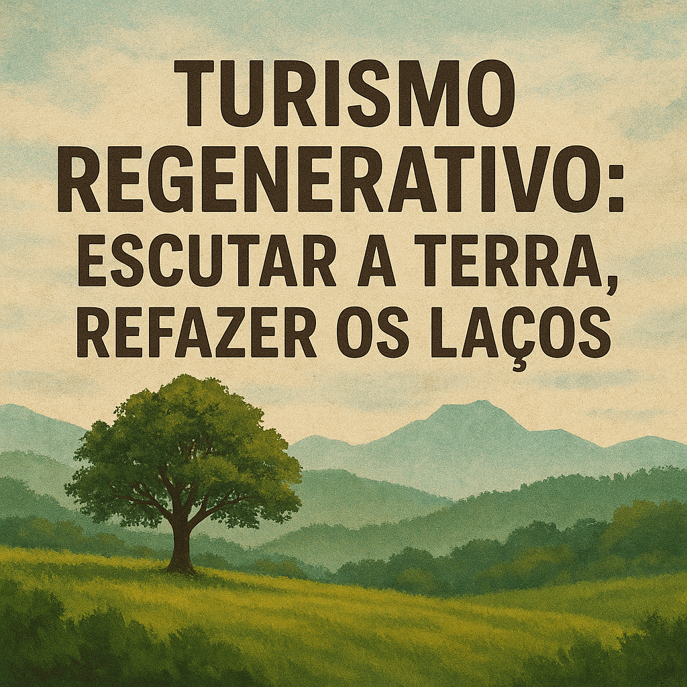

A conexão viva e ativa entre o agronegócio e os ODS
dawinwdawijwd
Por Luís Gustavo Arte e Mariana Sanchez.
29/07/2025 às 09:01

Durante o mês de setembro de 2015, mais de 193 líderes mundiais se uniram com o intuito de realizar três metas extraordinárias até o ano de 2030: a erradicação da pobreza extrema, o combate à desigualdade e à injustiça.
Ao final, esses grandes objetivos foram divididos em dezessete metas menores, os Objetivos de Desenvolvimento Sustentável (ODS), que ampliam e detalham as metas originais, oferecendo um plano de ação mais abrangente. Alguns desses objetivos possuem uma relação diretamente ligada ao setor do agronegócio, como o ODS 2 (Fome Zero e Agricultura Sustentável), em que o agronegócio é indispensável para garantir o acesso a alimentos seguros e de boa qualidade, ao mesmo tempo em que promove práticas sustentáveis e eficientes.
Porém, ao mesmo tempo em que o agronegócio pode ser um forte aliado no combate à fome e à insegurança alimentar, ele também pode acabar dificultando o progresso em alguns casos específicos. Tudo depende das ações e da responsabilidade daqueles que lideram e operam o setor.
Essa cooperação se mostra ainda mais necessária quando analisamos os dados. Segundo o IBGE, em 2024 cerca de 28% da população mundial sofreu com a insegurança alimentar, enquanto o desperdício de alimentos chega a 32%. O agronegócio é um dos principais pilares da economia mundial, movimentando mais de 3,4 trilhões de dólares por ano, e vem crescendo continuamente. A produtividade aumenta, ao mesmo tempo em que o setor adota práticas cada vez mais sustentáveis.
Ainda há um longo caminho pela frente, mas o agronegócio já se consolida como um dos principais aliados no combate à fome e ao desperdício, promovendo campanhas e ações que se mostram cada vez mais fundamentais — não apenas para a realização dos ODS, mas também para a garantia de um futuro mais justo e equilibrado.
Tudo isso reforça a enorme importância do agronegócio, não apenas como um dos motores da economia, mas como um setor capaz de transformar metas em realidade. Seu impacto vai além da produção: ele toca diretamente a vida de milhões de pessoas. Como relembrou Michael Fakhri, relator da ONU sobre o Direito à Alimentação:
“A fome e a fome em massa não são problemas de produção. Elas são sempre causadas por ações e omissões que negam às pessoas o acesso aos alimentos.”